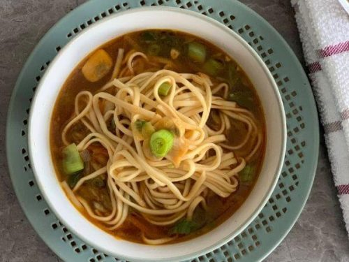

THUKPA RECIPE

INGRIDENTS
- Soba noodles or egg noodles
- 3 tablespoons Vegitable Oil
- 1/2 teaspoon hing
- 300gfree range chicken breast
- 1/2 teaspoon ground turmeric
- 50g finely chopped carrots
- 180g finely chopped mixed peppers
- 50g thinly sliced greed French beans
- 80g finely shredded white cabbage
- 1 teaspoon salt
- 800ml chicken stock
- 2 tablespoons fresh corainder, chopped
- 1 lemon
FOR THE SPICE PASTE
- 1 large garlic clove
- 4 teaspoons finely chopped fresh ginger
- 4 fresh green shillies, roughly chopped
- 1/2 talespoon cumin seeds, dry roasted
- 5 timmur peppercorns
- 1/4 teaspoon blackpeppercorns
- tablespoon fresh coriander
- 1 small tomato, deseeded and chopped
HOW TO MAKE THUKPA
- Start by making the spice paste. Place all the ingredients for thespice paste except the tomato in a small food processor or electric spice grinder. Blend until you get a paste. Add teh chopped tomato and blend again.You should get a smooth spoonable paste. You can make this paste in advace and keep it in the refrigerator for 2-3 daysor in the freezer for 1 month.
- Cook the noodles according to the packet instructions and set aside
- Heat the oil in a large saucepan over medium heat. Stir in the hing and cook for a few seconds. Add the chiken and cook for 5 minutes, until slightly golden. Add the turmeric and cook for 1 minute.
- Add al the vegetables and stir-fry for a couple of minutes. Stir in the salt and spice paste until all the ingredients are well coated. Cook for a couple of minutes.
- Pour in the chicken stock, bring to the boil, reduce the heat and simmer for 5 minutes. Add the noodles and cook for a couple of minutes, just enough to reheat them.
- Adjust the seasonnig to taste, add the chopped coriander and serve with lemon quarters for squeezing over.